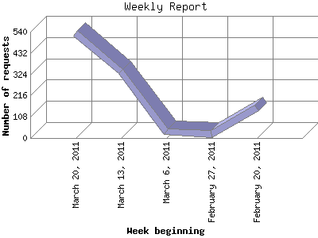

The Weekly Report identifies the activity for each week within the report
time frame. Remember that one page hit can result in several server requests
as the images for each page are loaded.
Note: Depending on the
report time frame for this report the first and last week may not represent
a full seven day week, resulting in lower hits.

| Week beginning | Number of requests | Number of page requests | |
|---|---|---|---|
| 1. | February 20, 2011 | 153 | 52 |
| 2. | February 27, 2011 | 21 | 12 |
| 3. | March 6, 2011 | 33 | 19 |
| 4. | March 13, 2011 | 338 | 104 |
| 5. | March 20, 2011 | 531 | 182 |
Most active week beginning March 20, 2011 : 182 pages sent. 531 requests handled.
Weekly average: 73 pages sent. 215 requests handled.
This report was generated on March 23, 2011 22:57.
Report time frame February 20, 2011 12:19 to March 23, 2011 23:59.
| Web statistics report produced by: analog 5.1 / Report Magic 2.21 |